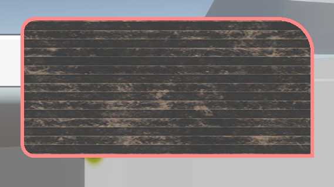

圆角描边矩形
UI总是会有很多奇奇怪怪的圆角矩形，虽然要在UIToolkit中实现是很简单的事情，但目前还是不太成熟，还是要用UGUI。在UGUI中要实现大致有三种方法，这里用Shader来实现一下。
单纯圆角图片
这是最麻烦且没必要的一种，针对不同分辨率和曲率要UI给出不同的图片，效率很低
9切片

把图片分割成9个部分，每个部分有不同的UV平铺与重复的方式，但是要实现像素级别的点对点，就需要准备不同分辨率的切片圆角矩形，也很麻烦
Shader实现
直接用SDF实现，一劳永逸。保证点对点的准确度，即使再搞什么圆角加描边也能快速实现。
UI shader
UI的shader与一般的差别不大，只是对一些命名有点小要求。
- 传入的主贴图名称为
_MainTex当然如果你不想用Image传入的就随便了。 - 同时还会传入颜色
float4 color : COLOR; - 默认的一些配置
- ZClip True
- ZTest Always
- ZWrite Off
- Cull Off
- UGUI传入的顶点并不仅仅是一个面片，根据不同的设置，它会生成特定的网格传入GPU，而且UV分布也不一定是均匀的，所以要用特定的简单Sprite。
SDF
从shaderToy上抄一个
float sdRoundedBox(in float2 p, in float2 b, in float4 r)
{
r.xy = (p.x > 0.0) ? r.xy : r.zw;
r.x = (p.y > 0.0) ? r.x : r.y;
float2 q = abs(p) - b + r.x;
return min(max(q.x, q.y), 0.0) + length(max(q, 0.0)) - r.x;
}
Shader
最后贴一下Shader

Shader "Unlit/UITest"
{
Properties
{
_OutlineColor("Outline Color", Color) = (1,0,0,1)
[PerRendererData] _MainTex("Base Map", 2D) = "white"
_scale("Scale width/height", float) = 1.0
_width("Outline Width", float) = 1.0
_Radius("Radius", Vector) = (0.1, 0.1, 0.1, 0.1)
}
SubShader
{
Tags
{
"RenderType" = "Transparent"
"RenderPipeline" = "UniversalPipeline"
"Queue"="Transparent"
}
Pass
{
Name "Default"
Blend SrcAlpha OneMinusSrcAlpha
ZClip True
ZTest Always
ZWrite Off
Cull Off
HLSLPROGRAM
#pragma vertex vert
#pragma fragment frag
#include "Packages/com.unity.render-pipelines.universal/ShaderLibrary/Core.hlsl"
struct Attributes
{
float4 positionOS : POSITION;
float4 color : COLOR;
float2 uv : TEXCOORD0;
};
struct Varyings
{
float4 positionHCS : SV_POSITION;
float4 color : COLOR;
float2 uv : TEXCOORD0;
};
TEXTURE2D(_MainTex);
SAMPLER(sampler_MainTex);
CBUFFER_START(UnityPerMaterial)
float4 _MainTex_ST;
float4 _OutlineColor;
float _scale;
float _width;
float4 _Radius;
CBUFFER_END
Varyings vert(Attributes IN)
{
Varyings OUT;
OUT.positionHCS = TransformObjectToHClip(IN.positionOS.xyz);
OUT.color = IN.color;
OUT.uv = TRANSFORM_TEX(IN.uv, _MainTex);
return OUT;
}
float sdRoundedBox(in float2 p, in float2 b, in float4 r)
{
r.xy = (p.x > 0.0) ? r.xy : r.zw;
r.x = (p.y > 0.0) ? r.x : r.y;
float2 q = abs(p) - b + r.x;
return min(max(q.x, q.y), 0.0) + length(max(q, 0.0)) - r.x;
}
float boxDist(float2 p, float2 size, float radius)
{
size -= float2(radius,radius);
float2 d = abs(p) - size;
return min(max(d.x, d.y), 0.0) + length(max(d, 0.0)) - radius;
}
half4 frag(Varyings IN) : SV_Target
{
half4 color = SAMPLE_TEXTURE2D(_MainTex, sampler_MainTex, IN.uv) * IN.color;
float2 uv = (IN.uv * 2 - 1) ;
uv.x *= _scale;
float d = sdRoundedBox(uv, float2(_scale,1), _Radius);
if (d > 0.0)
color = half4(0, 0, 0, 0);
else if (d > - _width)
color = _OutlineColor;
return color;
}
ENDHLSL
}
}
}其他
这里的SDF可以简单替换其他各种奇奇怪怪的类型，比如参考这个链接distfunctions2d。再结合一些变化的参数就可以做出动画效果了。
圆角描边矩形
https://www.kuanmi.top/2023/01/03/UIShader/